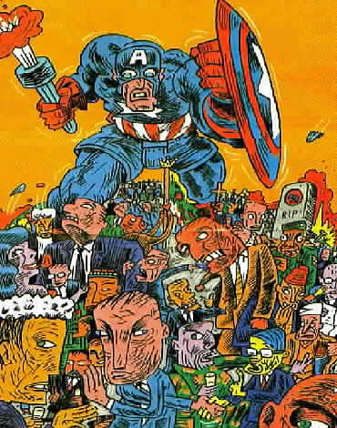

not
updated anymore: Jan 2000
Multikulti
zu Transkulti
Auf dem Weg zur Einheitskultur?
Multikulturalität,
Interkulturalität, Transkulturalität
|
Kulturbegriffe
|
inter (lat.) - zwischen
multi (lat.) - viel, vielfach
trans (lat.) - quer, durch
- hindurch, hinüber, jenseits |
|
Wolfgang
Welsch (1995):  Transkulturalität.
Zur veränderten Verfaßtheit heutiger Kulturen.
In: Zeitschrift für Kulturaustausch 45, Nr. 1/95,
S. 39-44. Transkulturalität.
Zur veränderten Verfaßtheit heutiger Kulturen.
In: Zeitschrift für Kulturaustausch 45, Nr. 1/95,
S. 39-44.
Interkulturalität
geht von der traditionellen Vorstellung der Kulturen als Kugel
oder Insel aus. „Kulturen, ... , können sich der Logik
iohres Begriffs gemäß eben nur voneinander absetzen,
sich gegenseitig verkennen, ignorieren, diffamieren oder bekämpfen,
nicht hingegen verständigen oder austauschen. Das Konzept
der Interkulturalität sucht nun nach Wegen, wie die Kulturen
sich ... miteinander vertragen, wie sie miteinander kommunizieren.“
Multikulturalität
„greift die Probleme des Zusammenlebens verschiedener Kulturen
innerhalb einer Gesellschaft auf ... .Es geht von der Existenz
klar unterschiedener, in sich homogener Kulturen aus. Das
Multikulturalitätskonzept sucht dann nach Chancen der
Toleranz, Verständigung, Akzeptanz und Konfliktvermeidung
oder Konflikttherapie.“
Die Kulturen haben nicht mehr
die unterstellte Form der Homogenität und Abgeschlossenheit.
Das Konzept der Interkulturalität und der Multikulturalität
sind nicht auf eine wirkliche Verständigung hin angelegt.
Transkulturalität
geht auf tatsächliche heutige Situation in den Gesellschaften
ein. Durch Migration, Kommunikationssysteme und ökönomische
Interdependenzen sind die Kulturen miteinander vernetzt. Verschiedene
Lebensformen enden dabei nicht an Nationalgrenzen. Die Unterscheidung
zwischen Eigenes und Fremdes ist oft nicht mehr möglich.
„Anstelle der separierten Einzelkulturen von einst ist eine
interdependete Globalkultur entstanden, die sämtliche
Nationalkulturen verbindet und bis in Einzelheiten hinein
durchdringt.“ Transkulturalität steht also für eine
Kultur der Integration. Das Kulturkonzept Wittgensteins liefert
uns dafür einen geeignten Kulturbegriff. „Wittgenstein
zufolge liegt Kultur dort, wo eine geteilte Lebenspraxis besteht.
Zudem rechnet dieses Konzept mit mannigfaltigen Verflechtungen,
Überschneidungen und Übergängen zwischen den
Lebensformen. ... Wenn ein Individuum durch unterschiedliche
kulturelle Anteile geprägt ist, wird es zur Aufgabe der
Identitätsbildung, solche transkulturellen Komponenten
miteinander zu verbinden.“
Beschreibt die Transkulturalität
also den neuen uniformierten Weltbürger? Auf diesen Einwand
antwortet Wolfgang Welsch: „Vielheit im traditionellen Modus
der Einzelkulturen schwindet... . Statt dessen entwickelt
sich eine Vielheit unterschiedlicher Lebensformen transkulturellen
Zuschnitts.“
|

Huntington,
Samuel P. (1996): The
Clash Of Civilizations And The Remaking Of World Order.
Touchstone. UK.
Mit dem Problem der Beziehungen
zwischen Kulturen beschäftigt sich auch Samuel P. Huntington.
Allerdings sieht er das Problem im Zeitalter eines globalen
Staatensystems eher bei der Abgrenzung der Kulturen voneinander,
er beschreibt sogar einen möglicherweise bevorstehenden
„Kampf der Kulturen". "The Clash of Civilizations" gibt einen
Ausblick auf im 21. Jh. zu erwartende weltpolitische Konflikte.
Danach würde, die vom kapitalistischen Westen und kommunistischen
Osten ideologisch geprägte bipolare Welt nach dem zweiten
Weltkrieg und bis zur Wende in Osteuropa, im 21. Jahrhundert
von einer multipolaren Welt abgelöst, die durch Konflikte
zwischen Angehörigen verschiedener Kulturen geprägt
sei. Verantwortlich für diese Konflikte sind nicht zu vereinbarende
Wertesysteme, unterschiedliche kulturbedingte Verhaltensweisen,Sitten
und Tradition sowie Sprache und Religion. Diese Konflikte könnten
v.a. innerhalb von multiethnischen oder multikulturellen Staaten
ausbrechen, z.B. in Form von Autonomiebestrebungen, wie
im Balkan. Derartige Bürgerkriege sind viel schwieriger
unter Kontrolle zu bringen als Kriege zwischen Nationalstaaten,
da in Bürgerkriegen keine regulären Truppen kämpfen,
die unter einheitlichem Oberbefehl einer Führung stehen.
In zukünftigen zwischenstaatlichen Krisen in der Welt werden
sich die Länder entlang von kulturellen Grenzen formieren.
|
Karrikatur aus der Süddeutschen
Zeitung vom 20./21. März zu einem Artikel von Huntington
Wohin die Macht driftet
Weltpolitik an den Bruchlinien
der Kulturen - ein Szenario für das 21. Jahrhundert

Wie wird die Staatenwelt im 21. Jahrhundert
aussehen? Wird die Vormachtstellung der USA Bestand haben? Wird
das vereinte Europa zu einem ernstzunehmenden Konkurrenten?
Und wo erden die Konfliktherde der Zukunft liegen? Auf der Grundlage
seiner These, dass die Weltpolitik nicht mehr primär von
Macht- oder Wirtschaftsinteressen geprägt wird, begründet
... Huntington ..., warum Konflikte vor allem dort entstehen,
wo unterschiedliche Kulturen aufeinanderprallen. Die Schlachtfelder
der Zukunft, so seine Vision, liegen entlang der kulturellen
Fronten, wobei der Westen gegen den Rest der Welt steht - einer
Welt, in der sich Koalitionen bilden werden, die bislang undenkbar
waren.
Meinungen
Der
Mythos vom Kampf der Kulturen
Eine Kritik
an Huntingtons kulturalistischer Globaltheorie
Harald Müller
Der Kampf der Kulturen findet nicht
statt. Vorsicht ist angeraten gegenüber Huntingtons Globaltheorie.
Sie pflegt ihre Tugend der Einfachheit auf Kosten der Wahrheit
und verfälscht die Realität.
Nach dem Ende des Ost-West-Konflikts
ist nichts mehr, wie es früher war, die Zukunft ist ungewiß
- und die Sowjets können nicht mehr schuld daran sein.
In dieser Ungewißheit verspricht uns Samuel Huntington
neue Orientierung: die Weltgeschichte treibt nach den Ideologien
nun die "Kulturen" gegeneinander - er benutzt den Begriff
der "Zivilisation", die im Angelsächsischen bevorzugte
Ausdrucksweise. Sie bilden die großen Feindgruppen der
Gegenwart und Zukunft. Am Horizont dräut die islamisch-konfuzianische
Koalition gegen alles Westliche - hier kombiniert Huntington
die "Gelbe Gefahr" mit den "Türken vor Wien", zwei in
den westlichen Kulturen tiefverwurzelte historische Bedrohungsängste.
Deutsche Stiftung für internationale
Entwicklung (Okt.'98) http://www.dse.de/zeitschr/ez1098-4.htm
Wider
dem "Kampf der Kulturen"!
Samuel P.
Huntingtons Thesen über Machtpolitik und Kriege im 21.
Jahrhundert
Die idyllischen Erwartungen der Herrschenden
- und manch naiver oppositioneller "Realpolitiker" - nach dem
Kalten Krieg haben sich nicht erfüllt. Anstatt über
"Ende der Geschichte", Sieg von Demokratie und Kapitalismus,
immerwährendem Frieden wird jetzt über den "Kampf
der Kulturen" diskutiert. Harvard-Professor Samuel P. Huntington
liefert die Politikberatung für die zukünftige Weltpolitik
und die kommenden Kriege.
Zeitschrift graswurzelrevolution
Jan'97 http://www.comlink.de/~graswurzel/215/kulturen.html
Buchkritik:
Kampf der Kulturen
Nach dem völlig überraschenden
Ende des Kalten Krieges wurde vielfach von einem "Ende der Geschichte"
und dem Anbruch eines goldenen, friedlichen Zeitalters geträumt.
Doch schon bald war klar, daß mit dem Ende des globalen
Konfliktes der beiden großen Ideologien des 20. Jahrhunderts
die Welt unberechenbarer geworden war. Am Persischen Golf mußte
eine internationale Staatengemeinschaft die irakischen Truppen
aus Kuwait vertreiben, die nach wie vor (zumindest auf dem Papier)
kommunistischen Regime Nordkoreas und Chinas rasselten gegenüber
ihren Brüderstaaten Südkorea und Taiwan lauter und
bedrohlicher mit den Waffen als je zuvor und selbst in Europa,
das nach dem Zweiten Weltkrieg mit Ausnahme der Interventionen
durch die Rote Armee in diversen Ostblockstaaten von zwischenstaatlichen
militärischen Konflikten verschont geblieben war, loderte
plötzlich wieder das Feuer des Krieges. ....
Onlinemagazin: amigagadget
http://www.amigagadget.de/32/p.lit.kampfderkulturen.html
|
Transkulturalität
im Leben
FUSIONEN
Multikulti im Büro
Der Chef reckt die Faust in die Höhe:
„Wer ist die Nummer eins?“ „Der Kunde, der Kunde, der Kunde“,
donnert es aus 50 Verkäuferkehlen zurück. Seitdem
der amerikanische Handelskonzern Wal-Mart die Wertkauf-Filiale
im hessischen Dreieich-Sprendlingen übernommen hat....
.... Deutsche Unternehmenskultur?
Vorbei und verweht. Daimler, genauer Daimler-Chrysler, sucht
per Anzeige, in der kaum mehr ein deutsches Wort vorkommt, einen
„Corporate Protocol Key Relationship Manager mit natürlicher
Affinität zum tranatlantischen Kommunikationstil und interkultureller
Rundum-Bildung“.
Wirtschaftswoche Nr.3/14.1.1999
http://www.wiwo.de/wwunternehmen/03_fusionen.htm
STAATSBÜRGERSCHAFTSRECHT
EINFLUSS AUF MILLIONEN
Der Streit um die doppelte Staatsbürgerschaft
verstellt den Blick aufs Wesentliche: Deutschland muß
seine Ausländer besser integrieren und künftige Zuwanderer
gezielter auswählen.
Die Unternehmer schweigen. Zum derzeitigen
....
Wirtschaftswoche 3.1999
http://www.wiwo.de/wwheft/03_99/titel.htm
|
Resümee
Trankulturalität vs.
Uniformierung / Nationalstaat / Realitätsbezug
Bei dem Konzept der Transkulturalität
ist z.B. vom Rückgang der Bedeutung der Nationalstaatlichkeit
und der Muttersprache die Rede, das heisst ja nicht, dass
in Zukunft alle englisch sprechen werden. Der Anteil englischer
Muttersprachler an der Weltbevölkerung geht sogar zurück.
Nichtsdestotrotz wird der Einfluss des Englischen als "Lingua
Franca" sich erhöhen. Gleichzeitig könnten sich aber
in den verschiedenen Weltregionen ganz andere (bzw. zusätzliche)
Sprachen als "Lingua Franca" etablieren. In grossen Teilen der
Weltbevölkerung wird Mehrsprachigkeit zunehmen, in einigen
afrikanischen Ländern müssen die Menschen heute schon
5 Sprachen sprechen, um sich verständigen zu können.
Durch diese Mehrsprachigkeit verstärken sich die verschiedenen
Einflüsse der Kulturen, Sprache ist ein wichtiger Teil
der Kultur, auf Individuen. Und durch diese vielläufige
Entwicklung werden ergo keine einheitlichen, uniformierten Menschen
entstehen, sondern eine Vielzahl verschiedener Typen. "Es entwickelt
sich eine Vielheit unterschiedlicher Lebensformen transkulturellen
Zuschnitts." Diesem transkulturellen Menschen kann der Nationalstaat
nicht mehr gerecht werden. Ja, er fühlt sich regelrecht
entfremdet in ihm, denn er lebt im Geiste ausserhalb oder über
dem Nationalstaat. Der Nationalstaat kann die Bedürfnisse
des transkulturellen Menschens nicht mehr erfüllen. Es
treten Probleme und Fragen auf, die der Nationalstaat nicht
mehr lösen und beantworten kann, Stichwort Staatsbürgerschaftsrecht,
Zoll-& Grenzschranken, Protektionismus, Multinationale Konzerne. 
Das Entstehen der transkulturellen
Gesellschaft kann heute nicht mehr bestritten werden. Gerade
in Deutschland ist dies zu beobachten. Es gibt viele in Deutschland
lebende Ausländer, die nicht zu einer Kultur (Nationalität)
im alten Sinne zuzurechnen sind. Der Vorteil des transkulturellen
Konzepts liegt gerade darin diese "Übernationalität"
als Chance zu sehen. Nach der multikulturellen & interkulturellen
Sichtweise wurden z.B. in Deutschland geborene Kinder ehemaliger
türkischer Gastarbeiter, als zwischen den Kulturen stehende
Menschen beschrieben. Diese ausgrenzende Sichtweise führte
eher zu Problemen als zu Lösungen.
Ist das Konzept der Transkulturalität
nicht auch ein Zurückbesinnen auf die Realitäten in
der Welt? Soetwas wie abgeschlossene homogene Nationen, u.a.
durch eine gemeinsame Kultur und Sprache bestimmt, sind eher
selten oder es wurde erst versucht, sie nach dem 1.Weltkrieg
künstlich zu schaffen. Man glaubte einen Frieden durch
eine saubere Teilung, einen Grenzzug, entlang der kulturellen
Linien zu erreichen. Diese Linien sind aber in der Wirklichkeit,
gar nicht so eindeutig zu bestimmen. Ja, oft gibt es solche
eindeutigen Trennungen gar nicht, wie in Bosnien und jetzt im
Kosovo zu sehen. Die alten multiethnischen Staaten, wie das
Kaiserreich Österreich-Ungarn zudem ja grosse Teile von
Jugoslawien, Kroatien, Bosnien gehörten, wurden v.a. auch
durch militärische Macht zusammengehalten. Das ganze Imperium
stand somit auch unter der kulturellen und sprachlichen Vorherrschaft
Österreichs. Es ist interessant darüber nachzudenken,
ob die früheren militärischen Mittel nicht heute durch
andere ersetzt wurden. So könnte man einmal die Rolle des
Geldes in dieser Hinsicht untersuchen.
In der idealen transkulturellen
Gesellschaft findet ein Austausch (Übernahme, Verflechtungen,
Verschmelzungen etc.) zwischen den Kulturen aber freiwillig
statt, wobei theoretisch keine Kultur (Zivilisation) bevorteilt
wird. Wie Huntington aber beschreibt sind gerade solche Kulturen
attraktiv, die besonders erfolgreich sind oder scheinen. Es
wird dann versucht von diesen Kulturen zu übernehmen. Lange
Zeit wurde Modernisierung mit Verwestlichung in der Welt gleichgesetzt.
Das hat sich geändert, die asiatischen Staaten z.B. sehen
ihre gerade wiedererstarkende Wirtschaft und Kraft als Produkt
ihrer eigenen Kultur. Huntington geht jedoch noch von einem
alten abgrenzenden Kulturbegriff aus, der bei der heutigen Entwicklung
an seine Grenzen stösst. Um den "Clash of Civilizations"
zu verhindern und Huntingtons Visionen nicht wahr werden zu
lassen, müssen wir uns zuerst von diesem Kulturbegriff
verabschieden. Welsch hält den Kulturbegriff Wittgensteins
für brauchbar. "Wittgenstein zufolge liegt Kultur dort,
wo eine geteilte Lebenspraxis besteht." Diese Definition ist
von ethnischer Fundierung und Homogenitätsansprüchen
frei. Meiner Ansicht nach drückt die Transkulturalität
eine heute bereits existierende Wirklichkeit aus. Es gibt sie
nicht die Polen, die Deutschen, die Katholiken, die Jugend,
die Studenten, die Mütter.... . Man kann mehrere "kulturelle
Identitäten" auf sich vereinigen. Jedes Individuum hat
eine "Binnenkultur" (Welsch). Wir sind Wanderer zwischen den
Welten, ein Gemisch aus verschiedenen kulturellen Zutaten. Der
Zugang zu diesen "Zutaten" ist durch moderne Medien, besonders
das Internet, immer leichter möglich, wodurch sich die
Entwicklung zur Transkulturalität nur verstärken wird.
|
Mario
Behling
|